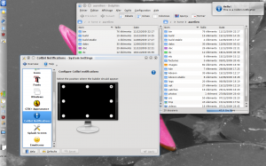

One of the features I worked on for Kubuntu 9.10 (Karmic Koala) was an implementation of Ayatana notifications for Plasma. Ayatana notifications are passive (without buttons) notifications which are queued instead of stacked. An interesting feature of these notifications is that when you move your mouse over them, they fade away and let you click through them, making it possible to interact with the window below.
In Kubuntu 9.10, Ayatana notifications for Plasma are implemented as a patch against the systemtray applet (go to the systemtray configuration to enable them). This was accepted by the Kubuntu developers as an experiment, not as a permanent change, because the Kubuntu devs prefer to follow upstream KDE as much as possible. As a consequence, I was told the patch implementing Ayatana notifications would not be present in the next version, Kubuntu 10.4 (Lucid Lynx), because the idea of passive notifications does not fit with Plasma team vision.
I initially was skeptical about passive notifications, but it grew on me and I didn't want to loose them. From the feedback I received, quite a few people like them as well. For this reason I decided to turn my patch into a standalone implementation: Colibri, which should hopefully be packaged in Kubuntu 10.4 and can be more easily installed and packaged for other distributions as well.
The code is hosted on Gitorious. Yesterday I released the first version on kde-apps.org. Colibri is composed of a binary and a (very rough) module for System Settings.
Give it a try!
{kind=link}
{kind=link}